FocusGuard
Stop losing hours to endless feeds. FocusGuard combines an app blocker, website blocker, Reels & Shorts filter, daily screen-time limits, Pomodoro focus timer, and strict mode — with no account required and all rules stored on your device.
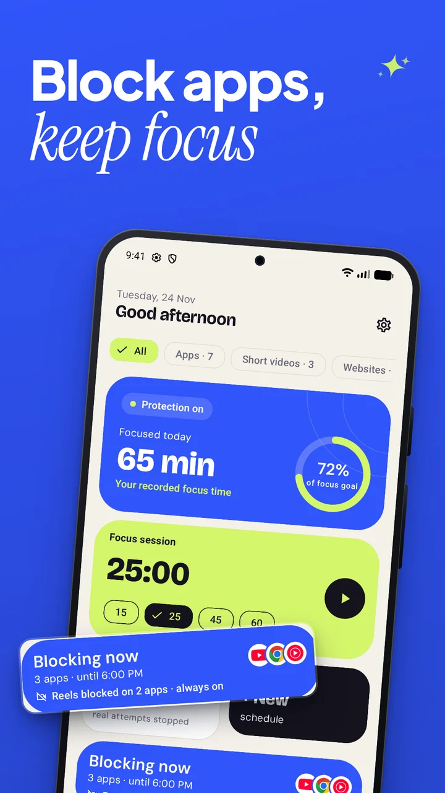
About FocusGuard
FocusGuard helps you take back your attention without locking away the useful parts of your phone. Block Instagram Reels, YouTube Shorts, TikTok, Facebook Reels, and Snapchat Spotlight while keeping messages, search, and chosen videos accessible. Pair short-video rules with recurring app and website schedules, daily screen-time limits, a Pomodoro focus timer, daily task planning, and strict-mode commitments.
Privacy & On-Device Architecture
No account is required. Your blocking rules, schedules, daily tasks, discipline score, and screen-time history stay strictly inside your phone's local storage, and enforcement works completely offline. Export and restore your rules to a local backup file whenever you switch devices.
FocusGuard uses the Android Accessibility API solely to detect foreground apps, supported browser addresses, and short-video players so it can apply your chosen blocks — never reading messages, keystrokes, or passwords. FocusGuard is supported by light Google AdMob ads (with UMP consent); see the privacy policy for full details.
Core Capabilities
- Reels & Shorts blocking: Close Instagram Reels, YouTube Shorts, TikTok, Facebook Reels, and Snapchat Spotlight all day or on your own schedule while keeping the rest of the app usable.
- App & website blocker: Group distracting apps into recurring schedules (workday, study sprint, overnight bedtime) and block distracting domains across supported browsers.
- Pomodoro focus timer & task planner: Start 1-tap Classic (25/5), Deep work (50/10), or Quick (15/3) sprints, block chosen apps while focusing, silence notifications, and launch sessions directly from today's tasks.
- Daily limits & shared pools: Cap daily time or app opens, add a mindful breathing pause before opening tempting apps, or share one daily allowance across a group of apps.
- Strict mode & PIN lock: Commit from 1 hour to 7 days so blocks cannot be loosened inside FocusGuard, protected by a local PIN and optional pause countdown.
- Discipline score & insights: Follow weekly screen-time trends, your 7-day rules-held score, current and best streaks, and a 13-week consistency heatmap.
Why use FocusGuard?
Private & Works Offline
No sign-up, no cloud sync. Blocking runs locally on your device even offline, with file-based backup & restore.
Block Reels, Keep Apps
Stop endless Reels and Shorts on Instagram, YouTube, TikTok & more while keeping chats, search, and regular videos open.
Pomodoro, Limits & Strict Mode
Run 1-tap focus sprints that block distractions, cap daily usage with shared pools, and lock in commitments with a local PIN.
App Screenshots
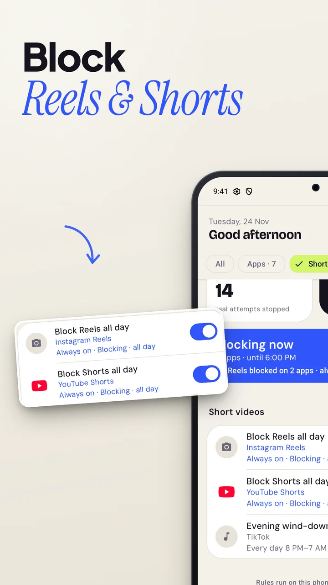
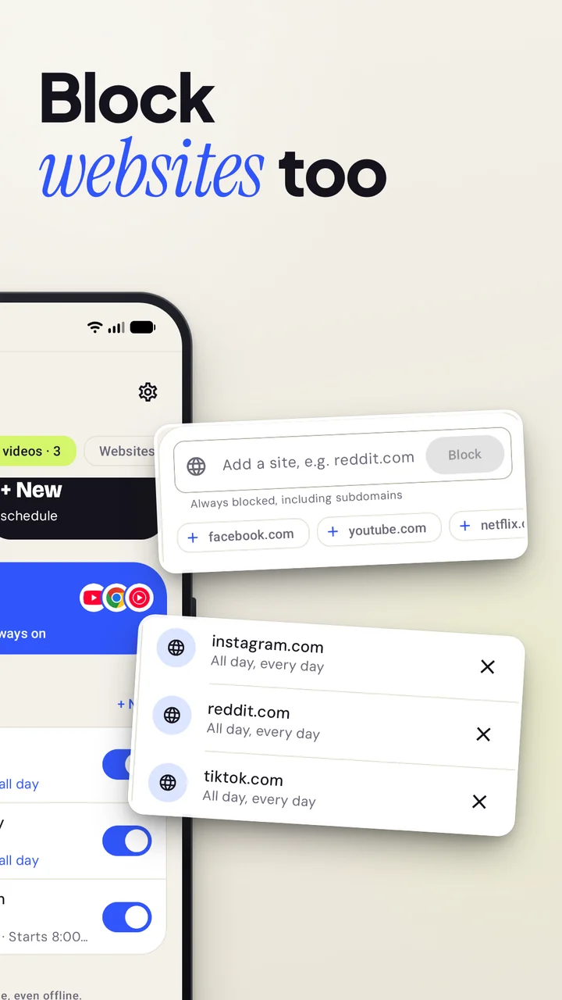
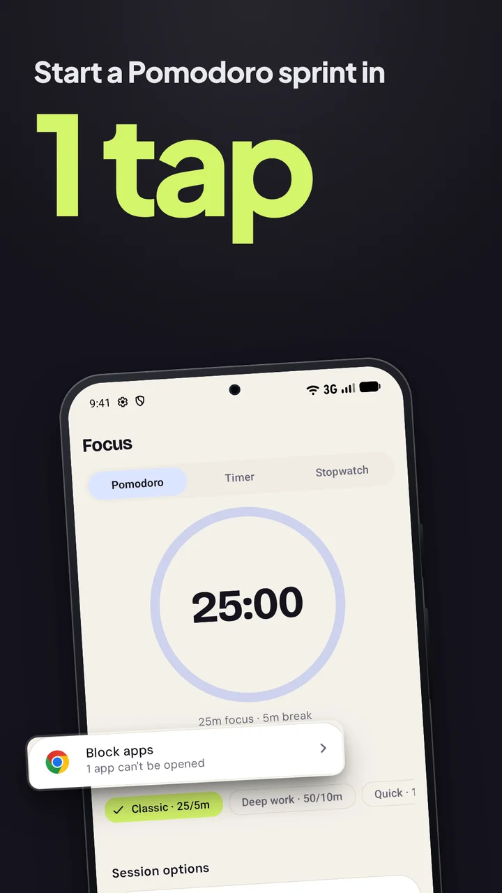
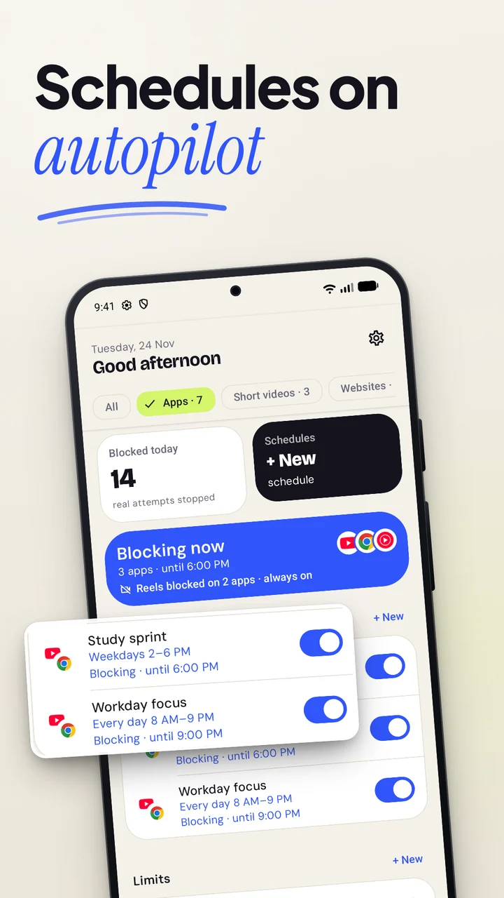
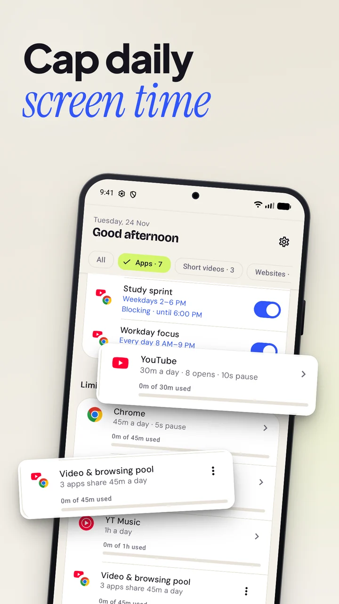
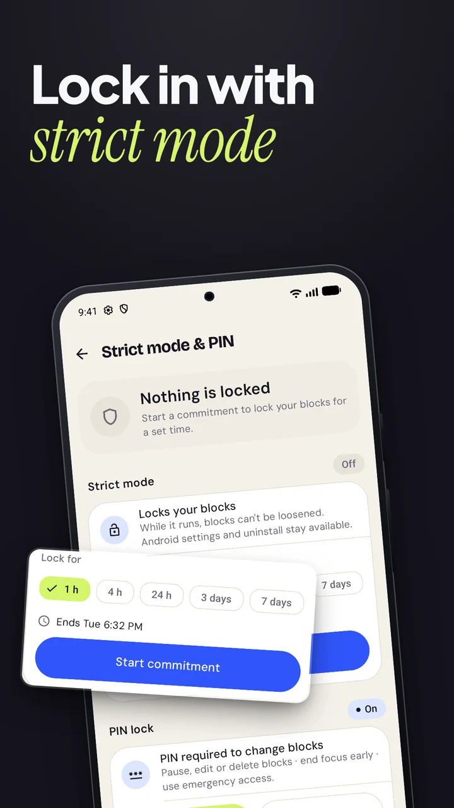
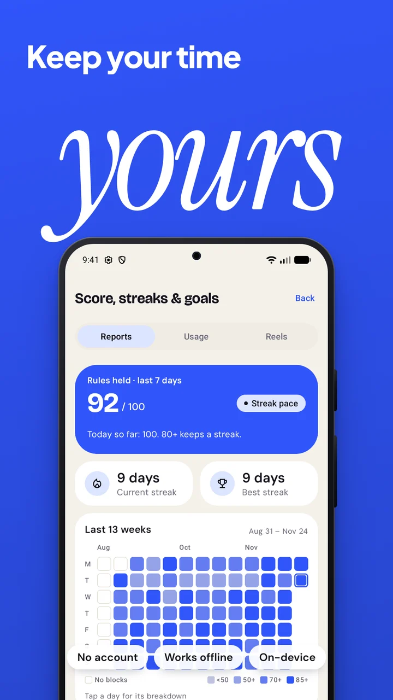
On tablets
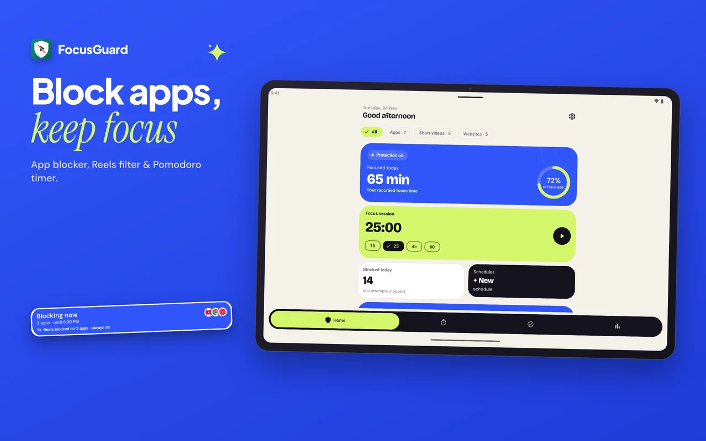
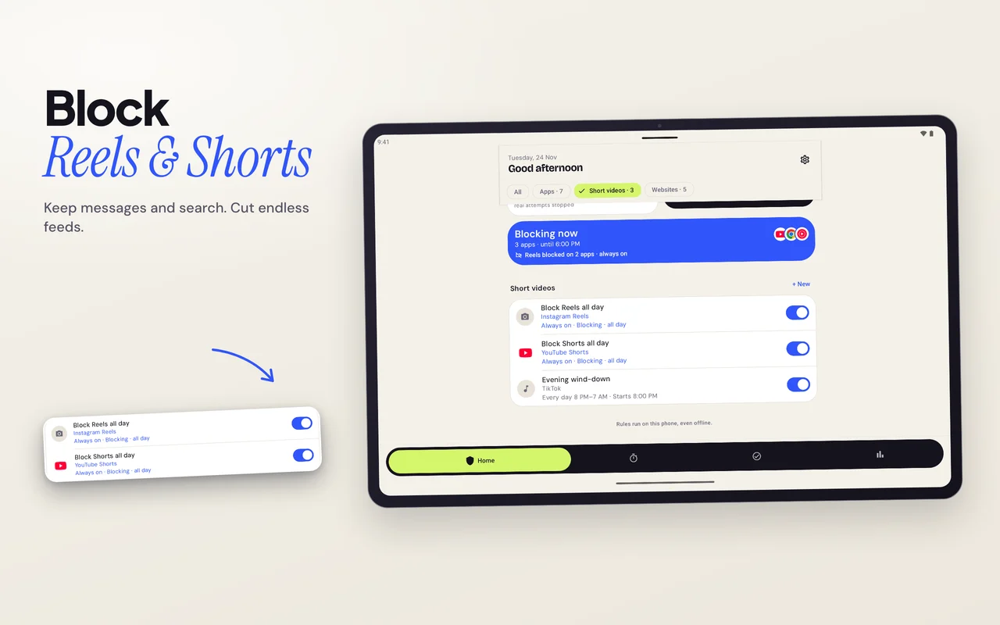
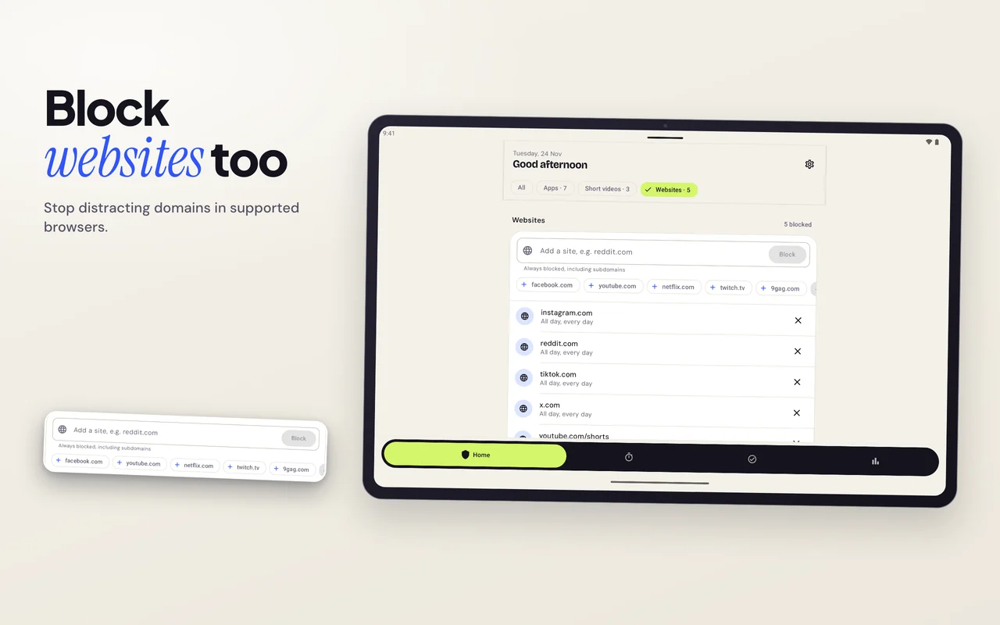
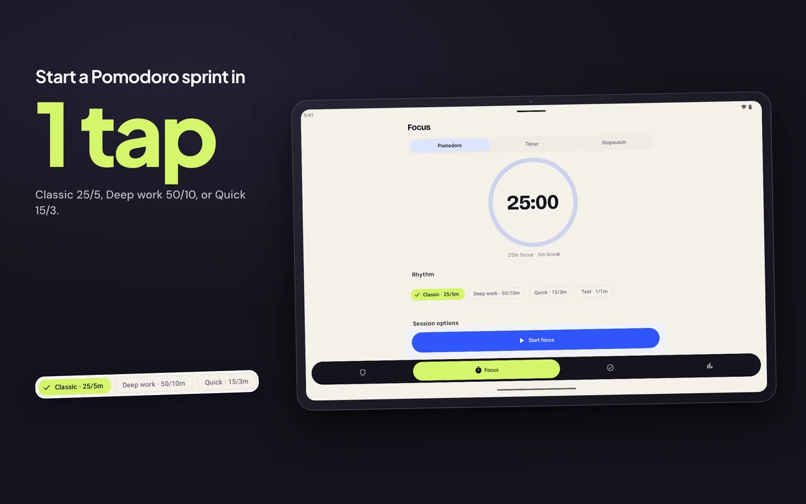
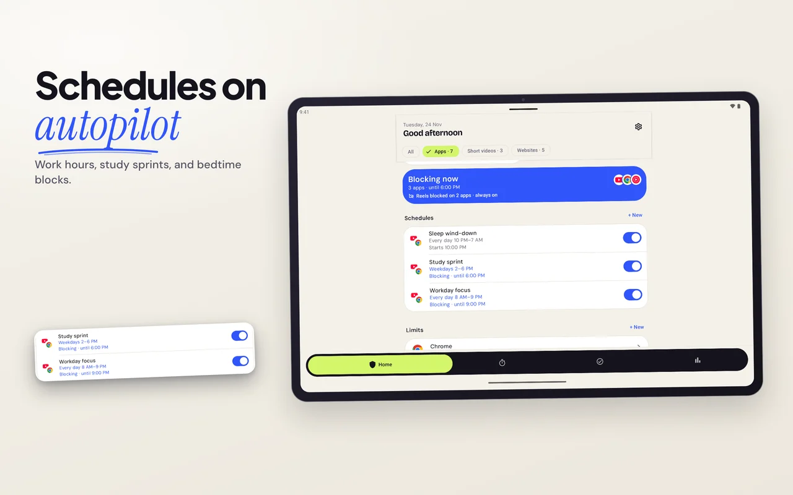
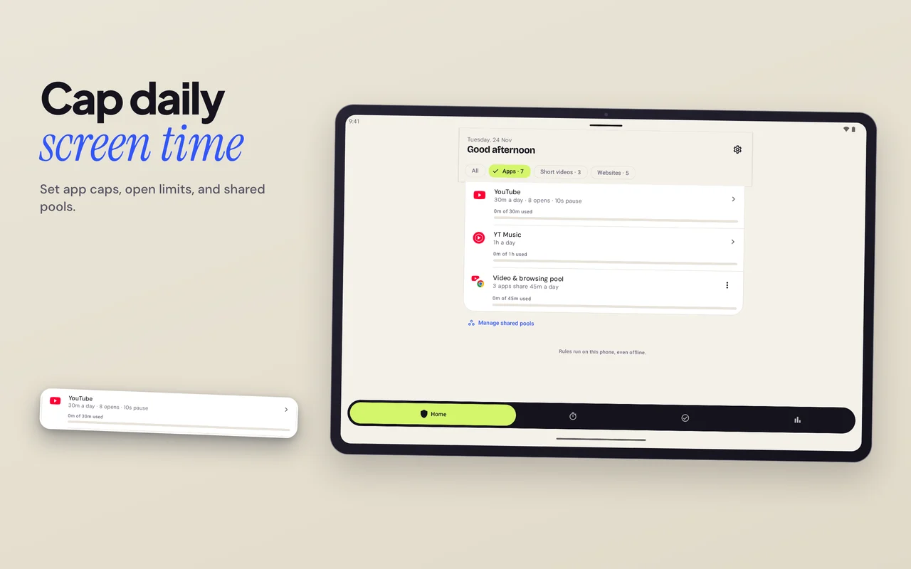
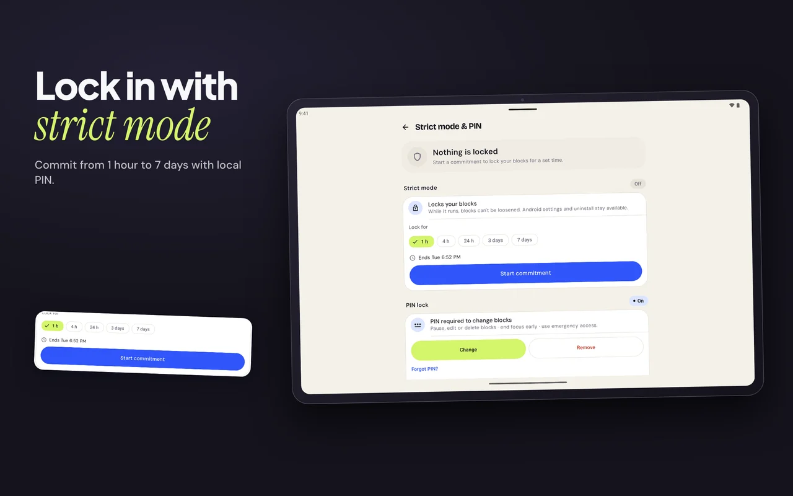
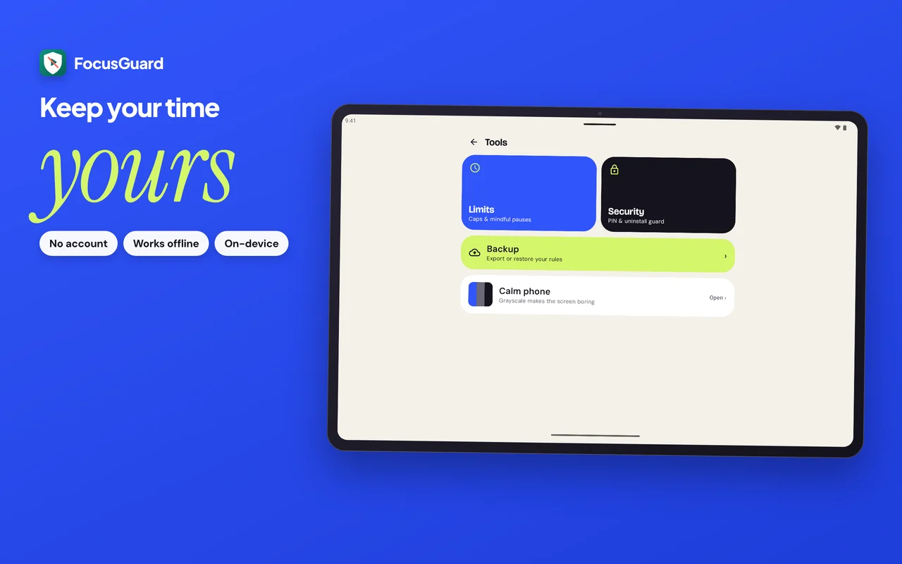
Technical Details
Built with Jetpack Compose and Material 3 for instant startup, low battery impact, and clean phone and tablet layouts.
All blocking rules, usage reports, tasks, and discipline scores remain stored locally on your device. See the privacy policy.
| Category | Productivity · Digital wellbeing |
| Current Version | 2.2.0 |
| Price | Free · contains ads · no in-app purchases |
| Permissions | Accessibility service; optional usage access & notification access; internet for ads only. |
| Requires | Android 8.0 or higher |
| Package ID | app.novushq.appblocker |